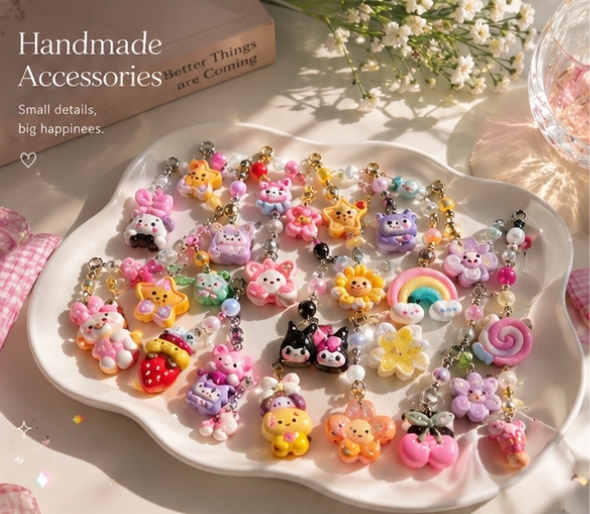
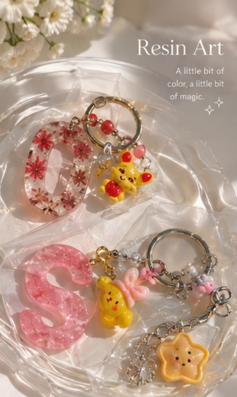
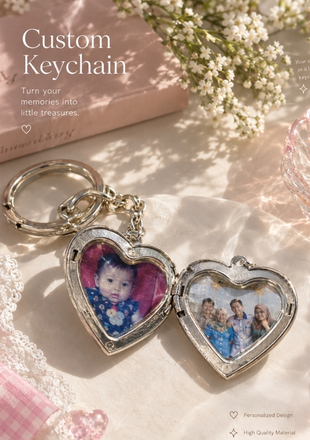
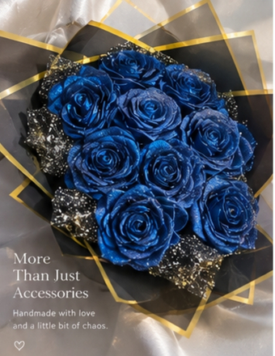
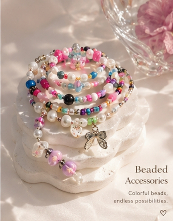
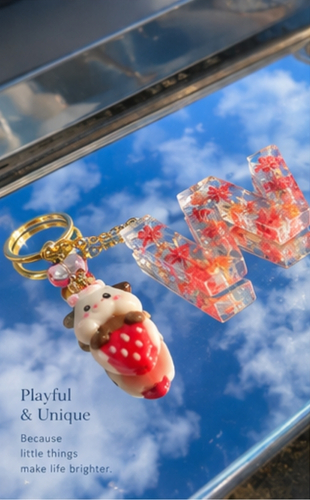
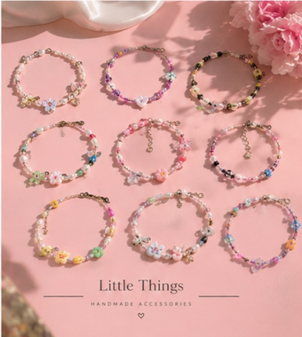
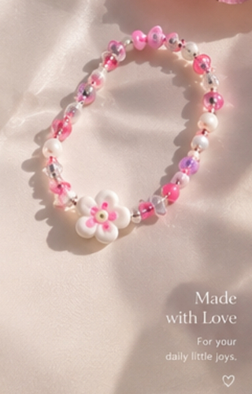

HANDMADE COLLECTION
Handmade Accessories
A playful collection of handmade accessories created with colourful charms, beads, and small decorative details.
HANDMADE WORKS
A collection of handmade pieces I created through beads, charms, resin, fabric, and other creative materials. Each piece reflects a different idea, experiment, and little moment of making.
↓ Scroll to exploreSELECTED WORKS
08 pieces · handmade collection

HANDMADE COLLECTION
A playful collection of handmade accessories created with colourful charms, beads, and small decorative details.

RESIN
Small resin pieces made with colourful elements, charms, and playful shapes.

CUSTOM PIECE
Personalised heart-shaped keychains created to keep meaningful photographs close.

HANDMADE FLOWERS
A handmade blue rose bouquet carefully shaped and arranged as a decorative gift.

BEADS
Colourful accessories made by combining beads, charms, and different patterns into playful pieces.

KEYCHAINS
Fun handmade keychains created with colourful charms and unexpected little details.

BRACELETS
A collection of handmade bracelets with different colour combinations, beads, and small charms.

HANDMADE BRACELET
A delicate handmade bracelet combining soft pink beads with a flower charm.
A LITTLE NOTE
From tiny charms to carefully assembled accessories, handmade work is one of the ways I enjoy turning simple materials into something personal.
Back to portfolio ↗